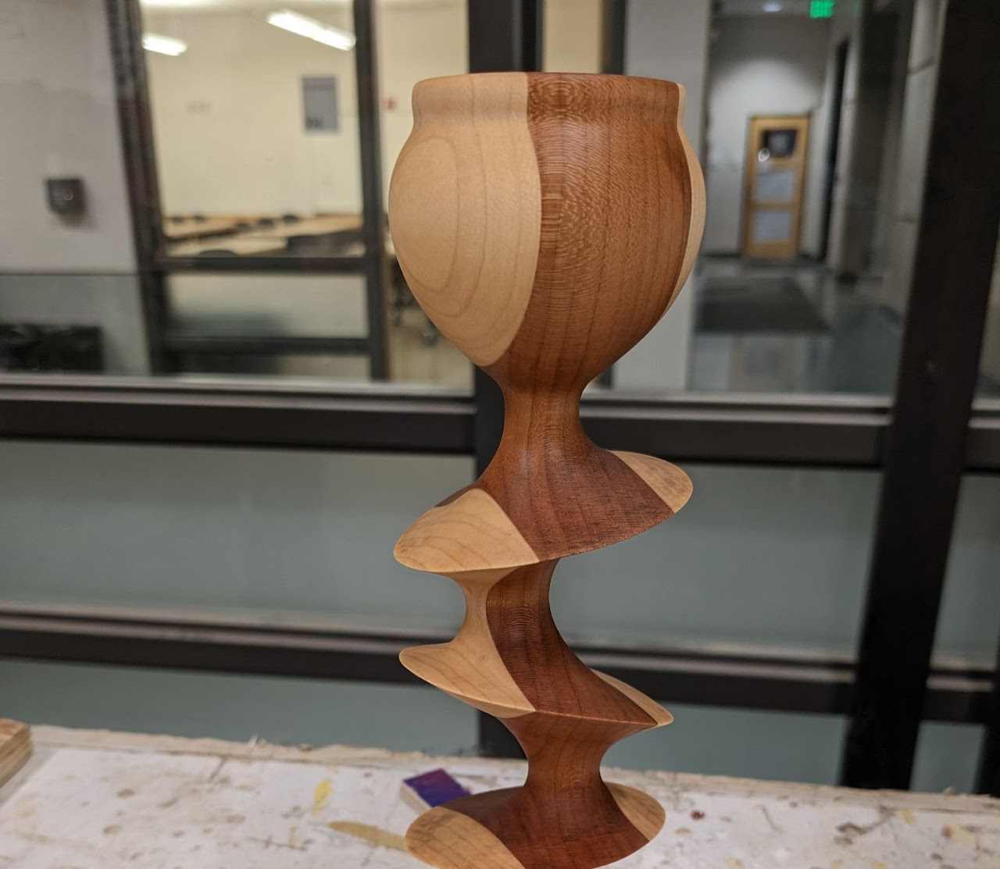
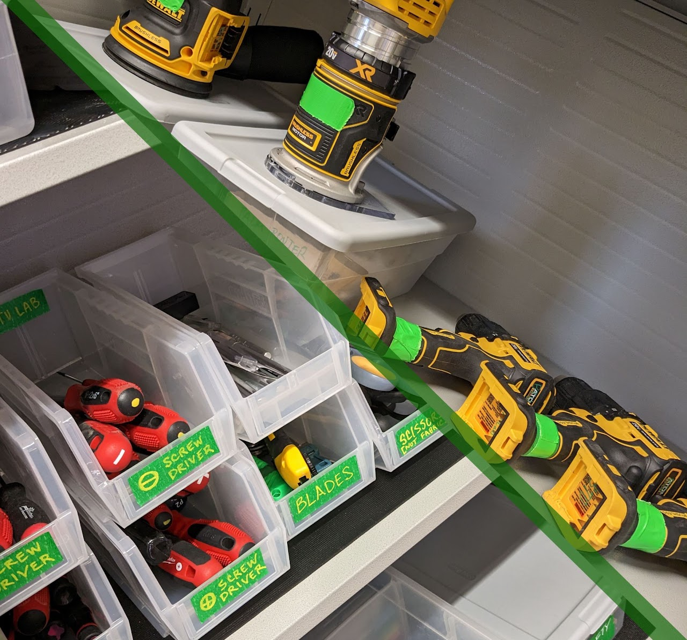
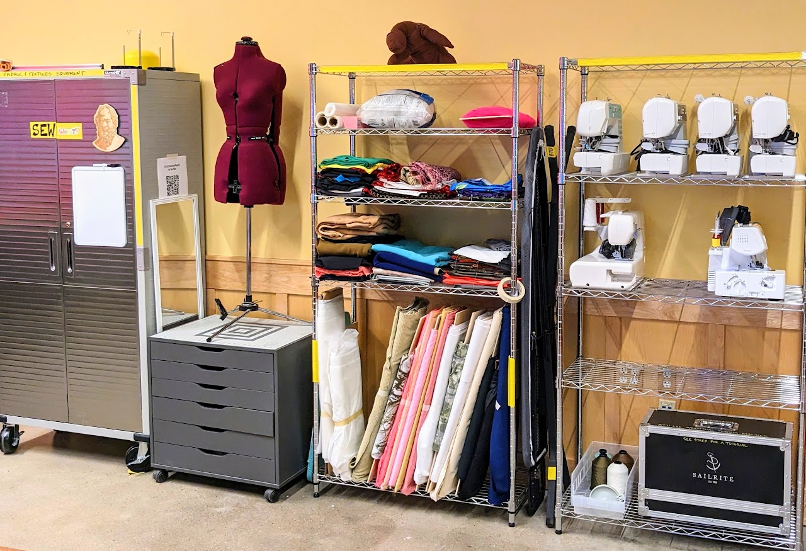
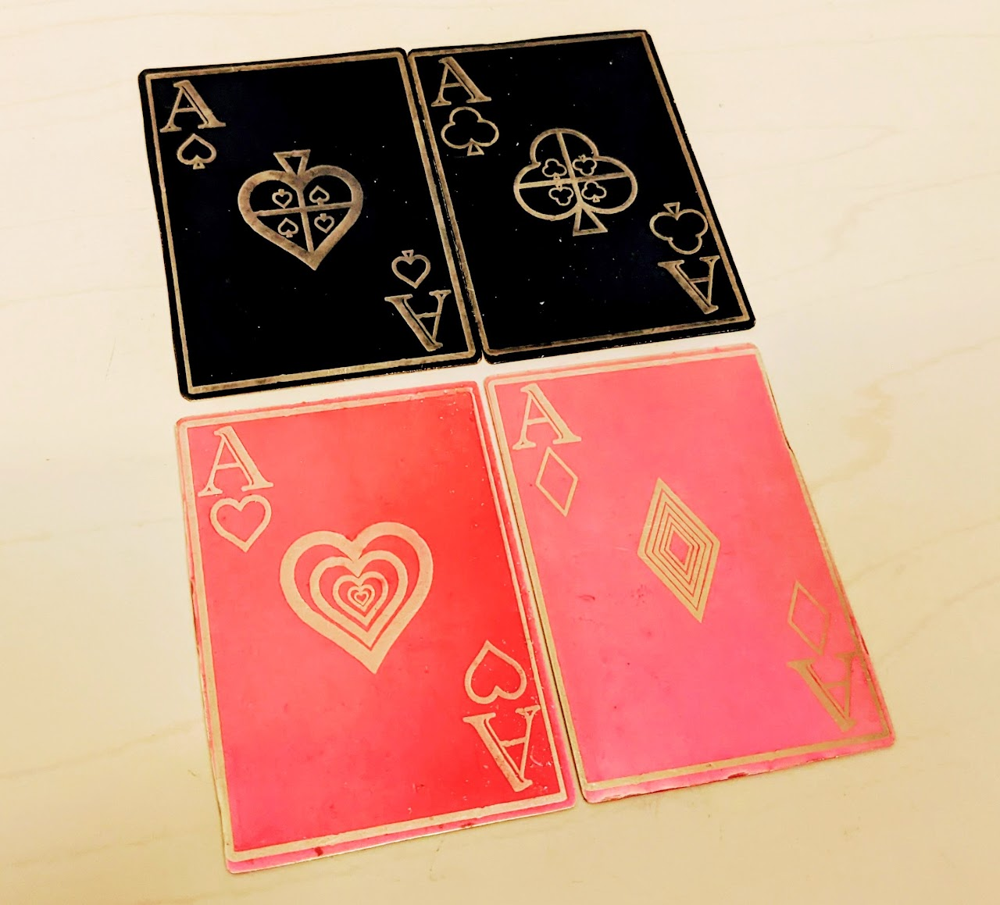
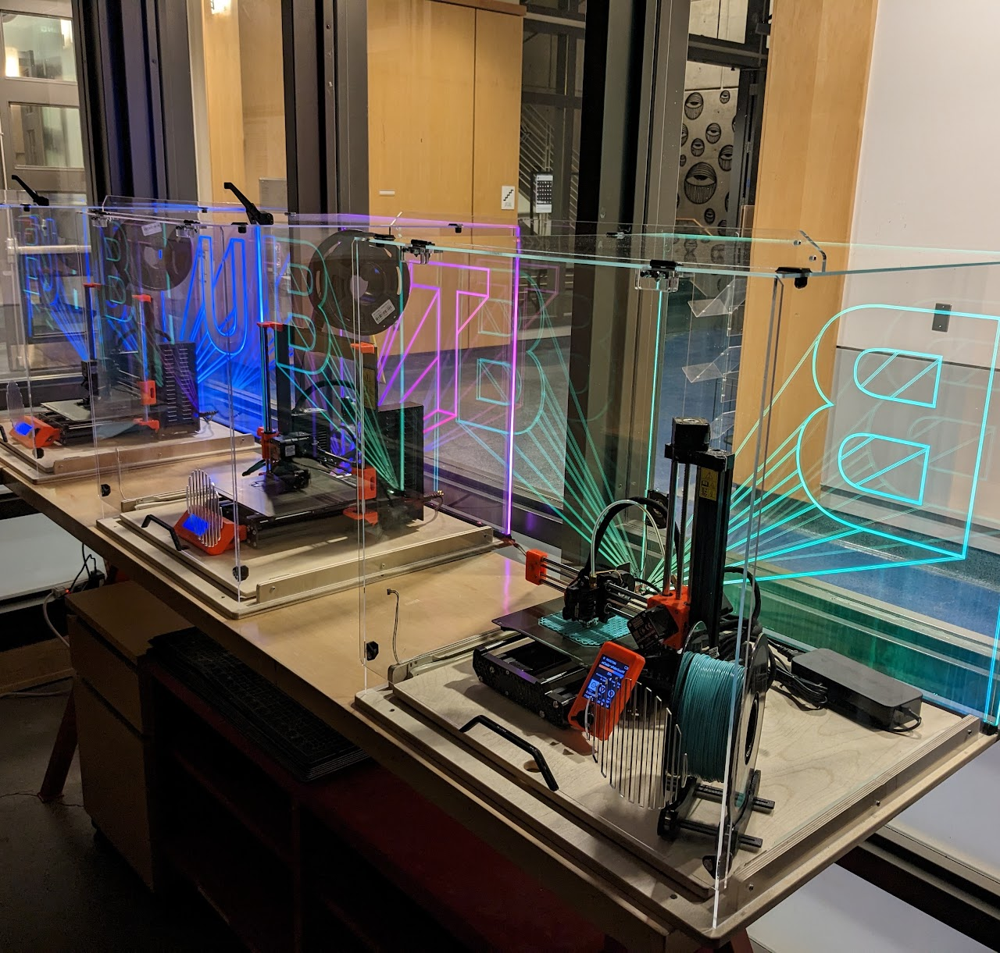
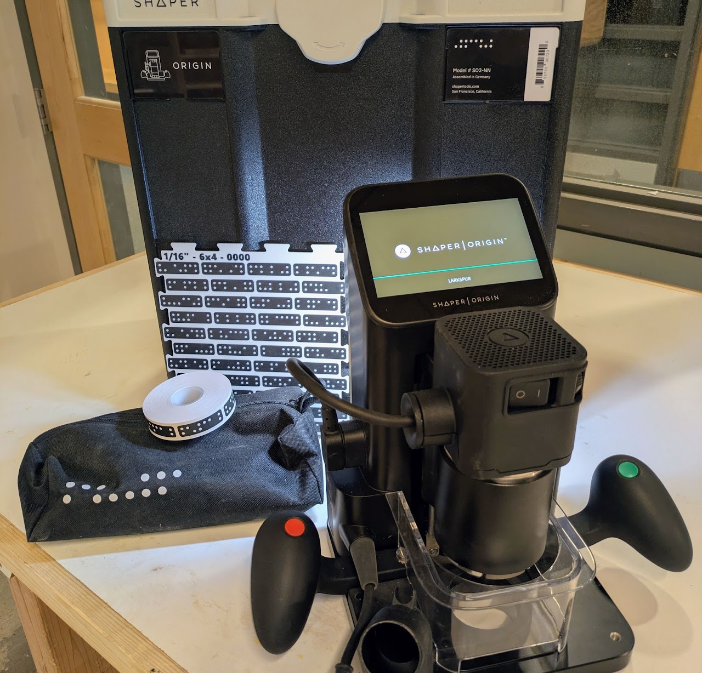

Wood Shop
The lab includes woodworking tools for building, prototyping, and fabrication projects.

Tools and Equipment
BTU Lab keeps lots of general tools on hand for all your inventing needs.
We can accommodate dozens of people at once and are working on increasing project storage space. Yay!

Wood Shop
The lab includes woodworking tools for building, prototyping, and fabrication projects.

Sewing and Textiles
Sewing and textiles equipment training happens as requested by staff and/or community members. It is also the subject of some workshops.

Electronics
Electronics and coding training happens as requested by staff and/or community members. It is also the subject of some ATLAS classes and BTU workshops.

Lasers!
Laser cutting equipment is available in the BTU Lab. Some specialized equipment requires separate training before use.

3D Printers
3D Printers located in the main space are for intended use only! Additional 3D printers are available for experimentation.

CNC
Thanks to generous support BTU purchased a Shaper Origin CNC router in 2026!